A mobile app that helps pet parents prepare fresh, human-grade, vet-approved meals for their dogs — built around the realities of allergies, picky eaters, and a budget.
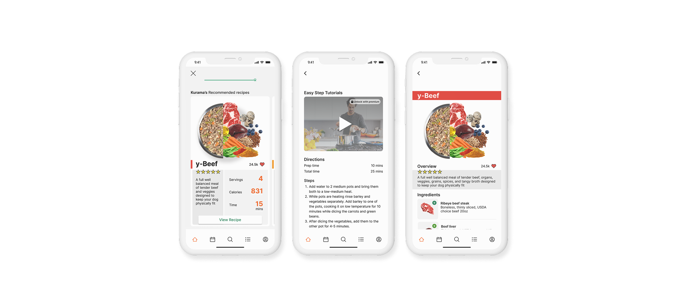
yFresh is a mobile app that gives pet parents human-grade, vet-approved fresh recipes — portioned and tailored to their dog, not pulled off a shelf.
Picture a pet parent hunting for a balanced, nutritious meal for a dog with a sensitive stomach, food allergies, and a picky palate — on a budget, where the vet's recommendation costs more than they can spend. That gap is where yFresh lives.
Processed kibble stays the default not because owners trust it, but because the healthy path is confusing, expensive, and hard to get right at home. The opportunity was to make fresh feeding simple, affordable, and safe enough to trust.
How might we provide healthier, affordable alternatives to everyday processed dog food?
Before a single screen, I needed to understand how pet parents actually decide what goes in the bowl — and where fresh feeding loses them.
Pet owners aged 25–38 — engaged, mobile-first, and invested in their pet's health.
A native iOS app — the lane competitors had largely left open.
The Farmer's Dog, Spot & Tango, and Ollie — strong brands, mostly desktop-first.
I started with a deep dive into U.S. pet owners to understand how they think about feeding. A few findings reframed the problem.
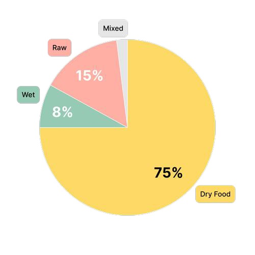
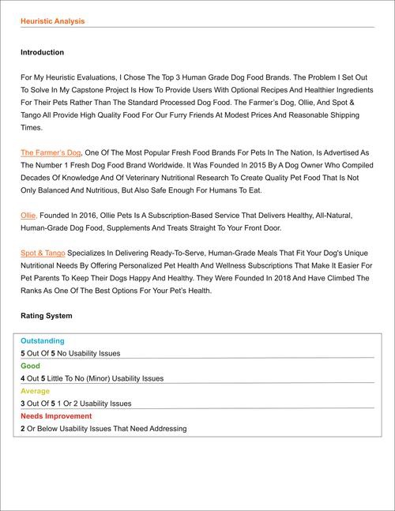
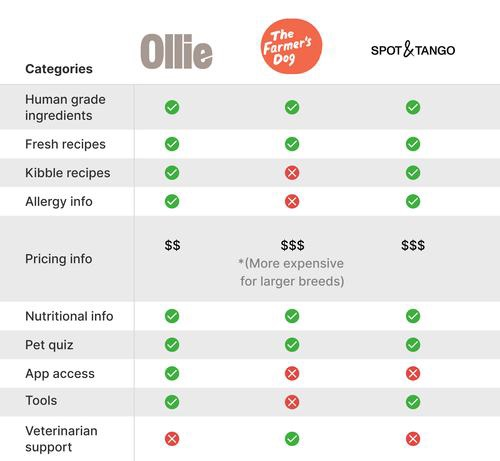
A screener survey narrowed the field to my target audience. Then I sat down with 11 participants, ages 25–38, to understand the factors that drive their decisions about their pets and pet food.
“I buy the healthiest, cheapest food possible.”
“I'll feed my dog anything as long as it's cooked.”
“Sometimes it's hard to get my dog to eat — she's extremely picky.”
“I probably spend more at the vet than I do on food.”
“My dog has severe allergic reactions to certain foods.”
“Dog food can be expensive.”
I mapped everything I heard into patterns — starting with an affinity map, then empathy maps and personas to keep real people at the center of every later decision.
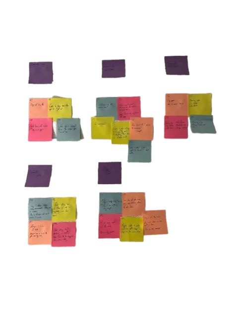
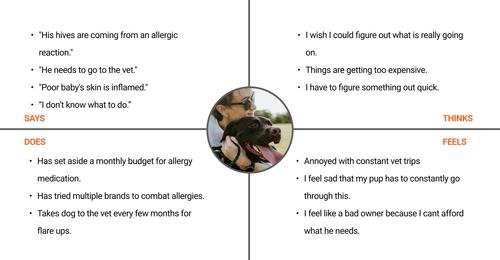
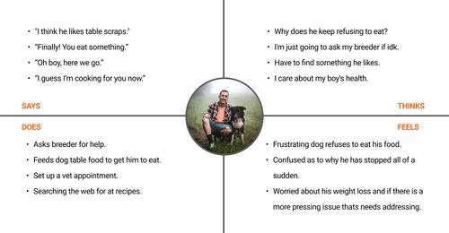
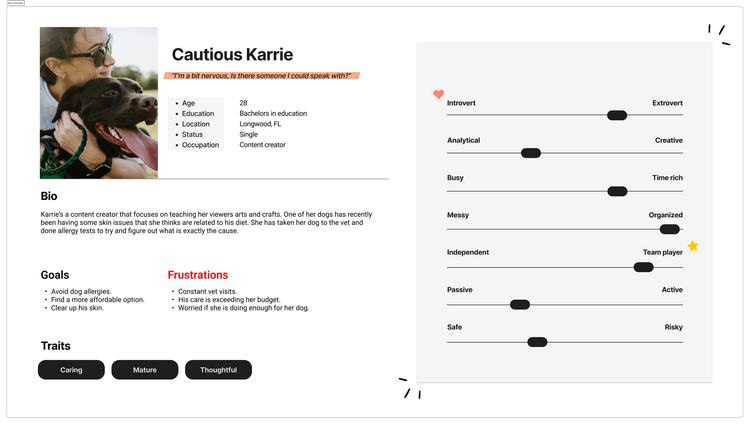
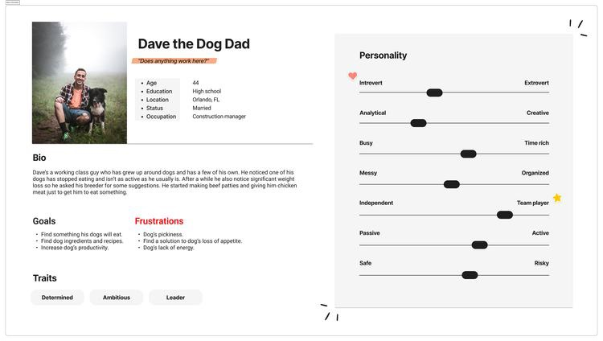
The patterns became a set of How-Might-We questions — each paired with the design move it pointed to.
How might we increase awareness and improve the experience of the product's offerings?
The move — lead with vet-approved meal plans and recipes that foreground real nutritional benefits.
How might we make users feel more confident in the ingredients they feed their pets?
The move — tutorial videos and directions broken into simple, followable steps.
How might we efficiently support users during meal preparation?
The move — keep it easy, clear and informative — prioritize testing and sweat the details.
How might we make users feel confident they have all the information they need?
The move — recipes built from fresh ingredients you can buy at any grocery store.
How might we make the product more affordable than the competition?
The move — prioritize consistency and make the product memorable so it earns a daily habit.
With the problem framed and solutions in hand, I shaped how the product would be organized — turning research into a structure users could move through without thinking.
I worked out the information architecture, then committed it to a sitemap and the core user flow that every screen would later hang from.
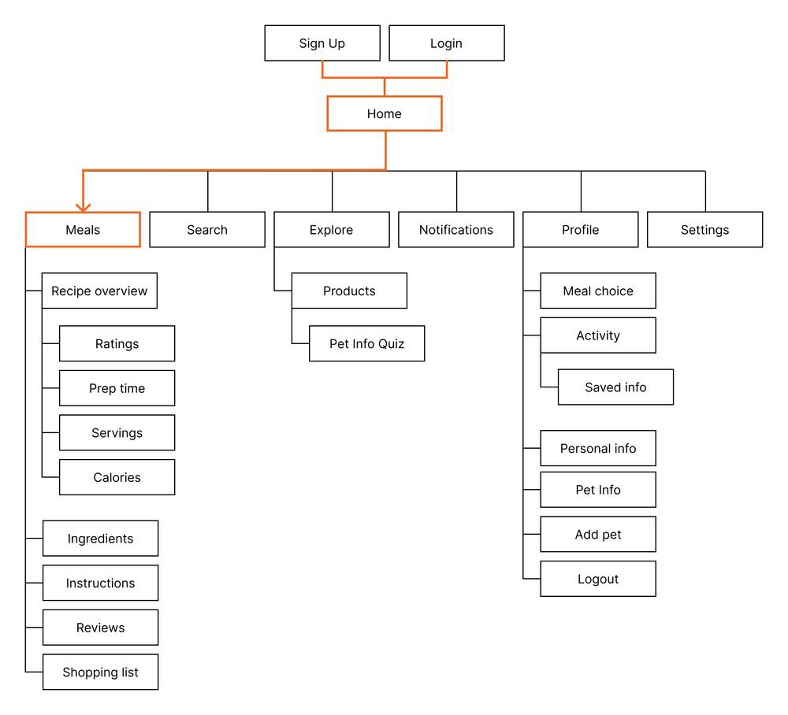
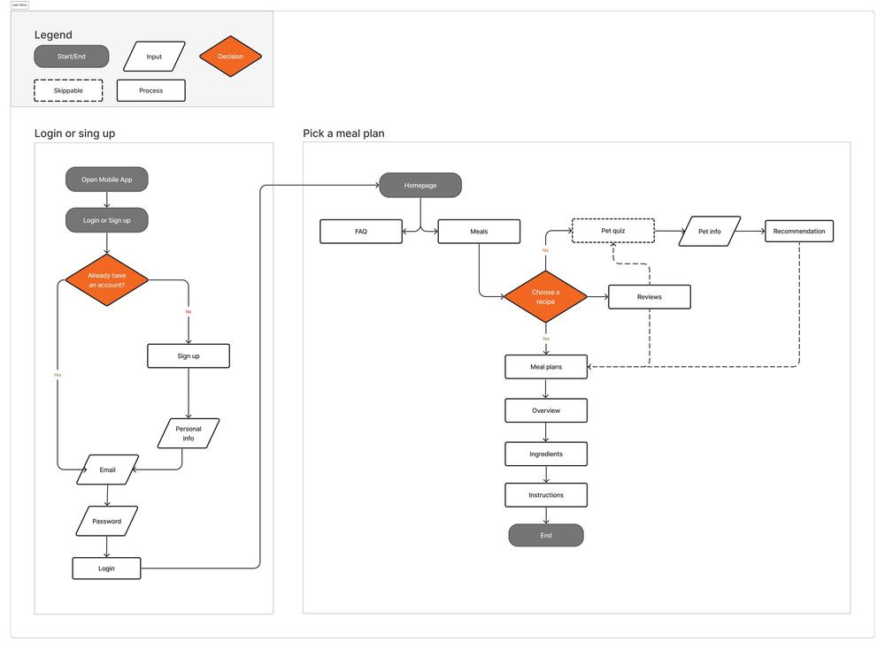
Guided by the user flow, I sketched the main screens, then moved into low-fidelity wireframes and prototypes for the first usability study.
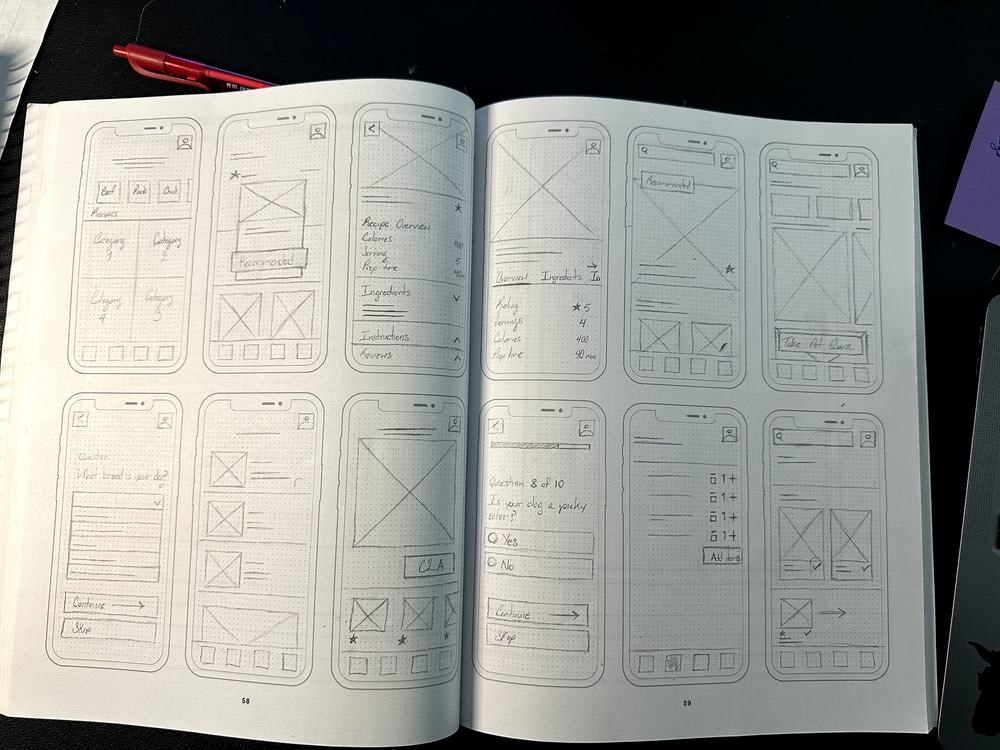
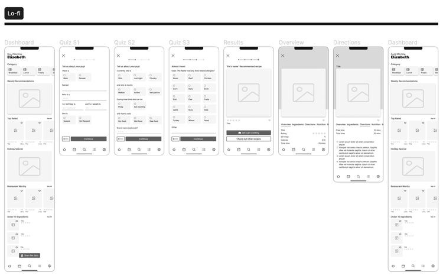
The brand started in orange. Testing the palette for contrast told a different story — so I rebuilt the colors to clear WCAG AA, and documented the whole thing as a reusable system.
Every primary button moved from the brand's orange to a green that cleared contrast — and suited a fresh-food product.
Pure #000 on #fff strains the eye. I dropped black to #1E1E1E to stay above guidelines with less fatigue.
Pure #fff was swapped for #f5f5f5, easing harsh contrast while holding AA.
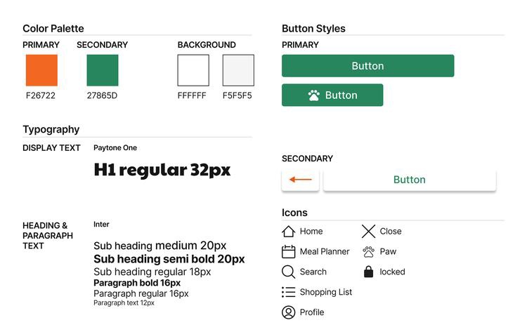
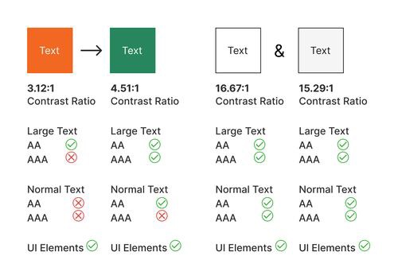
With the system in place, I built the high-fidelity screens and a working Figma prototype to feel how the app would actually move.
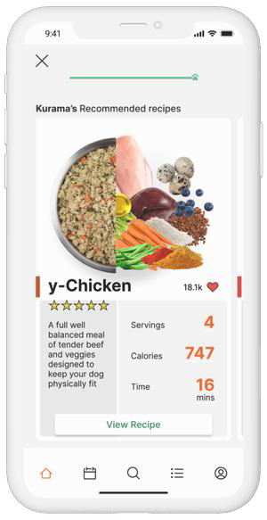
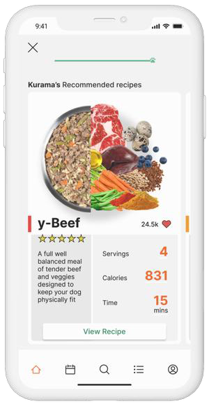
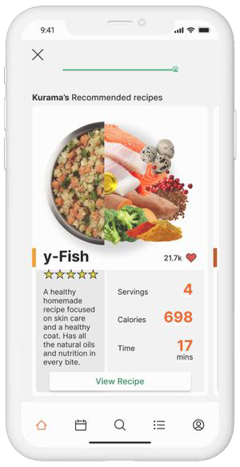
I ran several rounds of usability testing with the original group of participants. Three findings reshaped the product.
Testing showed the quiz didn't capture enough about a pet's health to tailor meals well. I added screens to the pet quiz to gather conditions and needs — so recommendations could be genuinely customized to the animal.
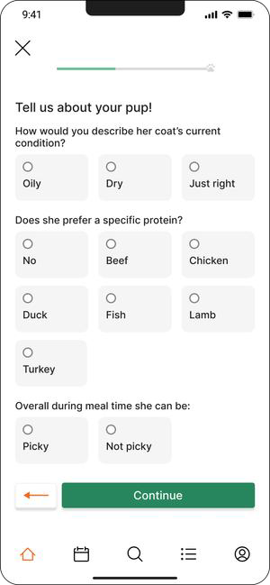
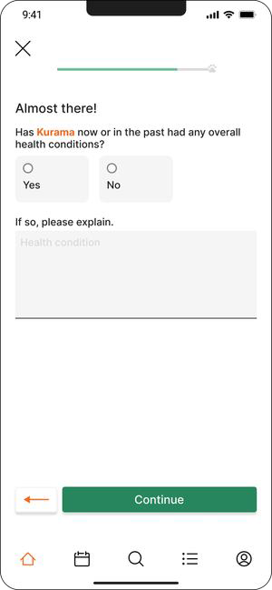
The first design served a single meal recommendation once the quiz was complete. Testing was clear: users wanted options. I shifted from one suggestion to a variety to choose from.
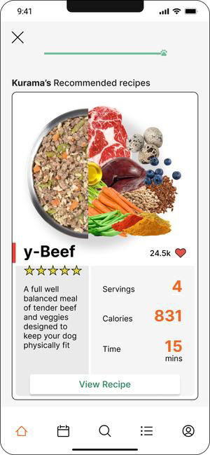
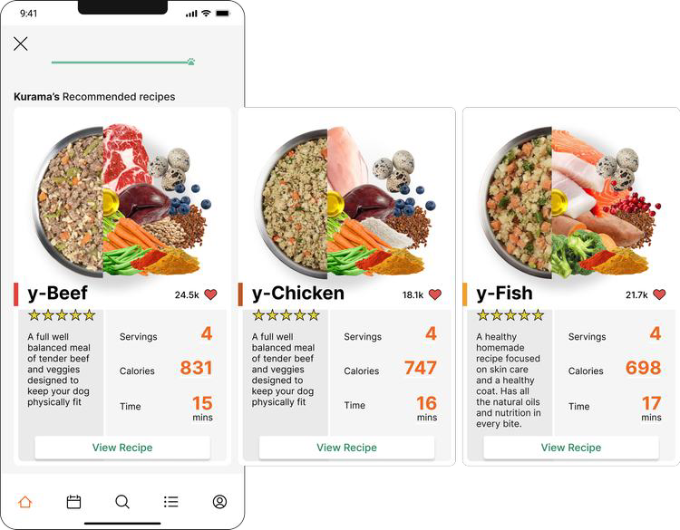
The main user flow carried unnecessary steps. To give users the quickest path to the goal, I combined several screens into one scrollable view — fewer taps, same information.
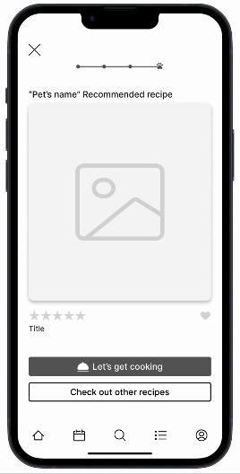
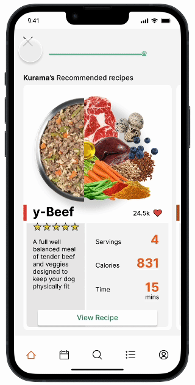
One question kept surfacing: how do you bring people back when there's no urgency to open the app? I weighed two directions — each with a real tradeoff worth testing before committing.
Pro — timely reminders to make meals, buy ingredients, and restock.
Con — can nag, and risks the opposite effect.
Pro — helps users plan meals around their schedule and availability.
Con — bulk meal-preppers may rarely need it.
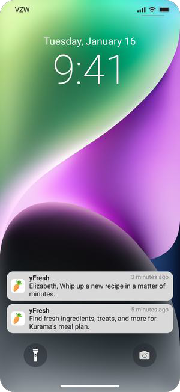
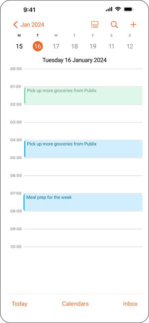
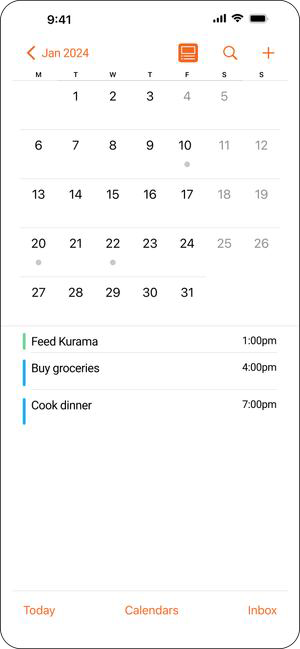
New vet-approved ingredients surface every year. User reviews and preferences let each plan keep adapting to the pet.
Next I'd focus on the shopping list and profile mechanics — the connective tissue between a recipe and a real grocery run.
Transparency comes from understanding real needs and balancing them against the business with clear, tested design.
Open to full-time roles, freelance projects, and conversations about design that moves the needle.